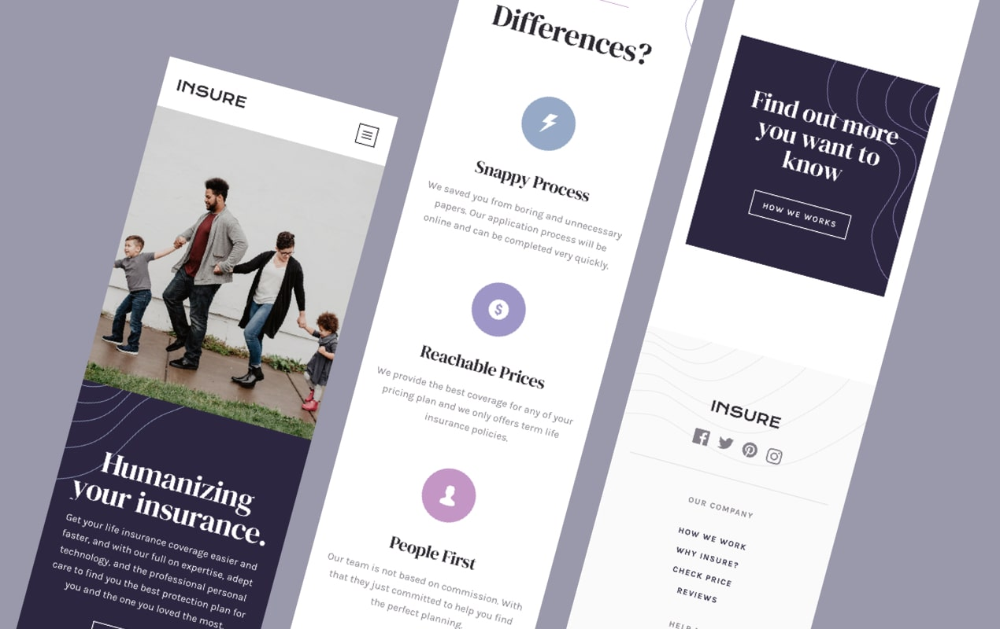
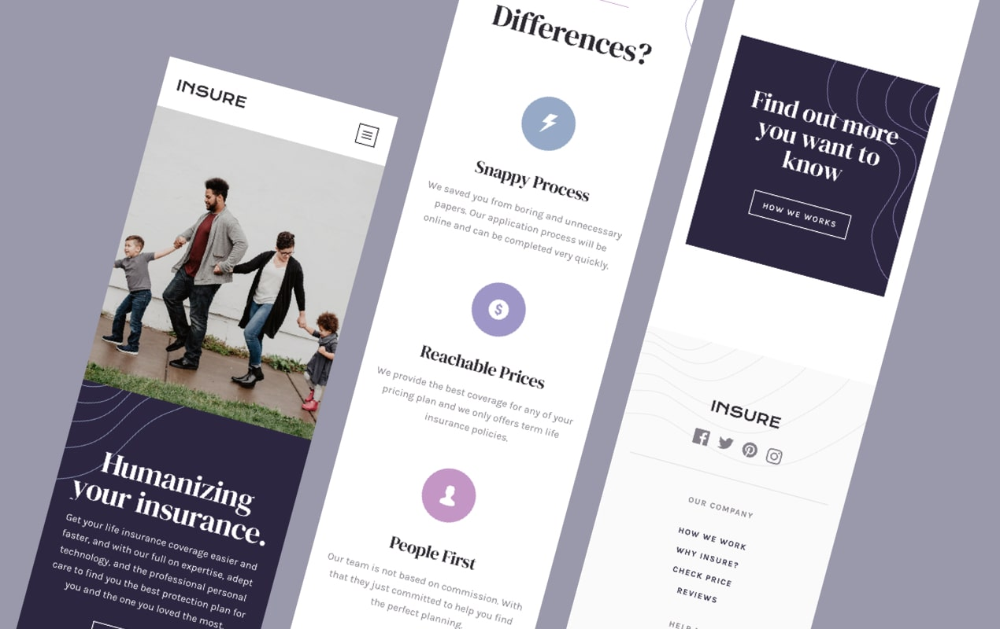

- Home
- Portifolio
- Contatos
Este foi um projeto pequeno que consistiu em HTML e CSS principalmente. Eu construí uma landing page totalmente responsiva. O único JavaScript que usei foi para o menu de navegação mobile.
Este projeto foi um desafio de front-end do Frontend Mentor. É uma plataforma que te faz práticar construindo websites a partir de um design e casos de usuário. Cada desafio contém designs mobile e desktop para ilustrar como o website seria em diferentes tamanhos de tela. Criar esses projetos me ajudou a refinar meu fluxo de trabalho e resolver problemas de código da vida real. Eu aprendi algo novo com cada projeto, me ajudando a melhorar e adaptar meu estilo.
 
